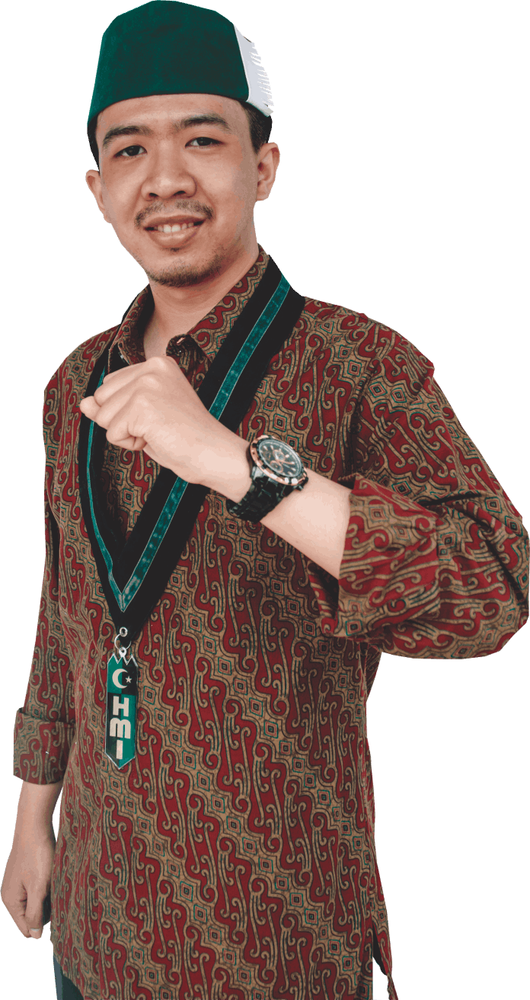

Tentang

#InterconnectingCakaba
Perkenalkan, saya Fatih Seida kader HMI Komisariat Sains & Teknologi Cabang Kabupaten Bandung, studi ilmu saya Teknik Informatika di UIN Sunan Gunung Djati Bandung. Profesi saya saat ini sebagai seorang UI/UX Designer, Mobile Programmer, dan juga Graphic Designer. Kawan-kawan HMI Cakaba Izinkan saya menjadi salah satu kandidat yang akan maju sebagai tombak pembaharu kaderisasi di HMI Cakaba.
- Lahir: 9 Januari 1998
- Website: fatihseida.github.io
- Telpon: 0821-1856-7300
- Alamat: Cipadung, Cibiru, Bandung
- Umur: 23
- Gelar: S1 Teknik Informatika
- Email: fatihseidaaaaa@gmail.com
Percepatan kemajuan teknologi (digitalization movement) menuntut manusia untuk senantiasa beradaptasi, HMI sebagai organisasi kader juga harus mampu mengimplementasikannya dalam aktivitas kaderisasi. Kemajuan teknologi harus dapat menjadi ruang interkoneksi setiap entitas yang ada seperti BPL, KOHATI, LPP, Balitbang, dan KAHMI Cabang Kabupaten Bandung yang bertujuan untuk membawa pembaharuan dan mengoptimalkan kaderisasi HMI
Latar Belakang
Peradaban merupakan keseluruhan dari budidaya manusia, yang mencirikan manusia membangun segala aspek kehidupannya dari mulai yang bersifat fisik maupun non-fisik. Kedua hal tersebut saling mempengaruhi, yang bermula pada tata nilai yang dianut kemudian tata nilai tersebut berkembang menjadi sebuah kebiasaan, perilaku, moral, norma, begitupun...
Visi dan Misi
Memperkuat Semangat Perwujudan Mission HMI pada Kader HMI Cabang Kabupaten Bandung untuk Mewujudkan Organisasi yang Adaptif, Inovatif serta siap menghadapi Society 5.0.
Internal
- Inventarisasi seluruh Aset dan Kekayaan HMI Cabang Kabupaten Bandung
- Sistematisasi Administrasi & Kaderisasi Cakaba
- Aktif dalam mendistribusikan minat & bakat kader HMI Cakaba pada LPP HMI Cakaba
- Aktif & Aspiratif dalam membentuk LPP lainnya di HMI Cakaba
- Membudayakan 4 pilar nilai : islami, berkelanjutan, digital dan semangat menyambut generasi baru
- Membentuk pusat karir kader HMI Cakaba
- Memformulasikan beragam konsep kaderisasi sesuai kebutuhan setiap komisariat
- Membentuk Badang Penelitian dan Pengembangan
Eksternal
- Merumuskan formulasi ekspansi kaderisasi di wilayah Kabupaten Bandung
- Membangun jaringan komunikasi antar cabang di wilayah Jawa Barat serta nasional
- Merumuskan formulasi aktualisasi kader HMI ditengah masyarakat Kabupaten Bandung
- Mengadakan kegiatan pemberdayaan masyarakat Kabupaten Bandung
Track Record
Pengalaman Organisasi
Ketua Umum HMI Komisariat Sains dan Teknologi
2019-2020
Ketua Bidang P3A HMI Komisariat Sains dan Teknologi
2017-2018
- SC LK HMI Komisariat Sains dan Teknologi 2017
- SC LK HMI Komisariat Sains dan Teknologi 2018
Anggota Bidang PAO HIMATIF UIN Bandung
2017-2018
- Ketua Pelaksana Dies Natalis Abhipraya 2018
- Ketua Pelaksana Seminar ASUS ROG 2018
- Ketua Pelaksana PUBG Campus UIN Bandung 2018